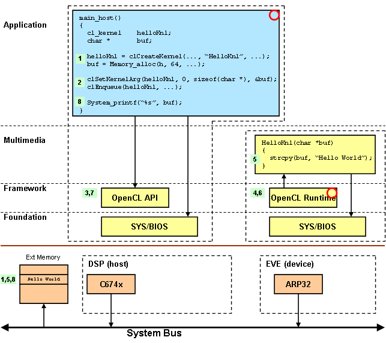
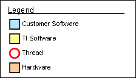

| package ti.sdo.opencl.examples.hello |
|
OpenCL Hello World Example
This example is another spin on the classic hello world example. The
application allocates a buffer and passes the buffer's base address
to a kernel running on the compute device. The kernel function writes
the string "Hello World" into the buffer. The application then reads
the string from the buffer.
[
more ... ]
package ti.sdo.opencl.examples.hello [1, 0, 0] {
}
DETAILS
This example is another spin on the classic hello world example. The
application allocates a buffer and passes the buffer's base address
to a kernel running on the compute device. The kernel function writes
the string "Hello World" into the buffer. The application then reads
the string from the buffer.
EXAMPLE DETAILS
The example components are illustrated in the following figure.

The example execution steps are as follows.
- A kernel object is created using the kernel function name. A buffer
is allocated from external memory.
- The buffer's base address is set as the only argument to the kernel
function. The kernel is scheduled for execution on the device processor.
The host thread will block until the kernel function completes.
- The OpenCL API on the host sends a message with the kernel arguments
to the OpenCL Runtime on the device processor.
- The OpenCL Runtime receives the message, unmarshalls the arguments,
and invokes the kernel function.
- The HelloKnl function writes the message into the buffer. It then
returns to the OpenCL Runtime.
- The OpenCL Runtime returns the message to the host processor.
- The OpenCL API returns to the application.
- The application reads the buffer results.
This legend applies to all figures.

SOFTWARE DEPENDENCIES
The following sofware products are required to build an OpenCL application.
- Framework Components 3.21.00.11 lite
- IPC 1.22.03.23
- SYS/BIOS 6.31.03.25
- XDCtools 3.20.07.86
- CCS 4.2.0.10017
- EVE Simulator 0.4.0.4 (T16 Compiler 1.0.0A11020 included)
Download these products using the following links.
INTEGRATION GUIDE
This guide will help you integrate SYS/BIOS and OpenCL into your
CCS projects. We will use the OpenCL Hello example as a template.
Locate this project in the following folder:
Framework Component Install Folder/examples/ti/sdo/opencl/examples/hello
There are three high level steps.
- Create a platform project
- Integrate the OpenCL Runtime into your compute project
- Integrate the OpenCL API into your host project
CREATE PLATFORM PROJECT
The platform project is setup as a CCS Standard Make project. It will
build the platform specific support needed by your OpenCL executables
for both the host and the compute device.
Create a standard make project in CCS for your platform.
- File > New > Standard Make Project
- Project Name > systemcfg_ti_platforms_simArctic
Copy all files from hello/systemcfg/ti_platforms_simArctic into your
new project.
- Ensure your platform project is active
- Project > Add Files to Active Project
- Browse to hello/systemcfg/ti_platforms_simArctic
- Select all the source files
Here is a brief description of each file.
- SystemCfg.h
-
Contains system wide constants. Declares the SystemCfg API.
- SystemCfg_host_bios.c
-
The host implementation of SystemCfg. All runtime configuration is
done in this file.
- SystemCfg.c
-
The device implementation of SystemCfg.
- App.cfg
-
The configuration script for the OpenCL API (host) executable.
- ComputeDevice.cfg
-
The configuration script for the OpenCL Runtime (device) executable.
- config.bld
-
Defines the memory map used by both the host and compute device
executables.
- makefile
-
The makefile for this project.
Modify the project make command to use the GNU Make executable provided
by the XDCtools product.
- Select the project in the project list
- Project > Properties
- Select C/C++ Make Project
- Select the Make Builder tab
- Build command > Use default > Unselect
- Build command: ${XDCROOT}/gmake
- Click Apply
Add the eclipse_home variable to the build environment. The makefile
references this variable to compute the CCS install folder. This
ensures that when upgrading to a new CCS release, the makefile will
reference the products installed into the new release.
- Select the Environment tab
- Click New
Variable: ECLIPSE_HOME
Value: Click the Variables button, select eclipse_home
Optional: you may also add the DEPOT variable if you have installed
some products in a different location.
Optional: you may also add the following variables if you have installed
the Code Gen Tools in a different location or need to use a specific
version.
CGT_C6X_INSTALL_DIR = C:/CCS/Depot/ti_cgt_c6000_7_2_0B2
CGT_T16_INSTALL_DIR = C:/CCS/Depot/ti_cgt_t16_1_0_0A11020
Click OK in the project properties dialog.
Edit the project makefile to update the product variables. They are at
the top of the makefile. You need to replace the text your_version_number
with the actual product version which is installed. For example, the
XDCtools variable might look like this.
XDC_INSTALL_DIR = $(CCS_DIR)/xdctools_3_20_07_86
To modify the memory map, edit the config.bld file. Note: the first
time you edit this file, you must associate the XDCscript editor with
this file. Do this for both *.bld and *.cfg files. Subsequently,
you will be able to just double-click the file to edit it.
- Select config.bld
- Right-Mouse-Button > Open With > XDCscript Editor
The variable MemMapSects defines all the memory map sections and
their properties. You can modify, add, or remove these as needed for
your executable. Use the comment at the top of the file to help keep
track of your memory map. See the xdc.platform.IPlatform documentation
for a description of the memory map section. Each memory map section is
of type metaonly struct Memory defined in the documentation.
Edit your linker command files from your host and device projects. Look
for the MEMORY directive. Using the memory sections defined in your
linker command file, create similar sections in the MemMapSects object.
Delete any unused sections.
Here is the memory directive from the device (T16) project.
MEMORY
{
VECS (RW) : org = 0x00000000, len = 0x001000
DMEM (RW) : org = 0x10020000, len = 0x007C00
PMEM (RW) : org = 0x10027C00, len = 0x000400
CODE (RWX) : org = 0x81000000, len = 0x100000
}
Here is the memory directive from the host (DSP) project.
MEMORY
{
PMEM (RW) : org = 0x20027C00, len = 0x000400
CODE (RWX) : org = 0x80000000, len = 0x100000
DATA (RWX) : org = 0x80100000, len = 0x100000
}
Here is the MemMapSects object which combines the memory sections
from both linker command files.
// Memory Map
// 0000_0000 - 0000_0FFF 1000 ( 4 KB) VECS
// 1002_0000 - 1002_6FFF 7000 ( 28 KB) DMEM (data)
// 1002_7000 - 1002_7FFF 1000 ( 4 KB) IPC_SR0_T16 (SharedRegion_0)
// 2002_7000 - 2002_7FFF 1000 ( 4 KB) IPC_SR0_DSP (SharedRegion_0)
// 8000_0000 - 800F_FFFF 10_0000 ( 1 MB) CODE_DSP
// 8010_0000 - 801F_FFFF 10_0000 ( 1 MB) DATA_DSP
// 8100_0000 - 810F_FFFF 10_0000 ( 1 MB) CODE_T16
// 8110_0000 - 811F_FFFF 10_0000 ( 1 MB) DATA_T16
// 8200_0000 - 8FFF_FFFF E00_0000 ( 224 MB) --------
var MemMapSects = {
VECS: {
name: "VECS", space: "data/code", access: "RW",
base: 0, len: 0x1000,
comment: "Vector Table (4 KB)"
},
DMEM: {
name: "DMEM", space: "data", access: "RW",
base: 0x10020000, len: 0x7000,
comment: "Local data memory (28 KB)"
},
IPC_SR0_T16: {
name: "IPC_SR0_T16", space: "data", access: "RW",
base: 0x10027000, len: 0x1000,
comment: "IPC SharedRegion_0 T16 (4 KB)"
},
IPC_SR0_DSP: {
name: "IPC_SR0_DSP", space: "data", access: "RW",
base: 0x20027000, len: 0x1000,
comment: "IPC SharedRegion_0 DSP (4 KB)"
},
CODE_DSP: {
name: "CODE_DSP", space: "code/data", access: "RWX",
base: 0x80000000, len: 0x100000,
comment: "DSP Code Memory (1 MB)"
},
DATA_DSP: {
name: "DATA_DSP", space: "data", access: "RW",
base: 0x80100000, len: 0x100000,
comment: "DSP Data Memory (1 MB)"
},
CODE_T16: {
name: "CODE_T16", space: "code/data", access: "RWX",
base: 0x81000000, len: 0x100000,
comment: "T16 Code Memory (1 MB)"
},
DATA_T16: {
name: "DATA_T16", space: "data", access: "RW",
base: 0x81100000, len: 0x100000,
comment: "T16 Data Memory (1 MB)"
}
};
Note that program code and data sections have names to reflect which
core they apply to (e.g. CODE_DSP, CODE_T16). The DMEM section is slightly
smaller to accomodate the SharedRegion_0 section. The SharedRegion_0
memory section replaces the KARG memory section. It is used by the OpenCL
implementation for passing kernel function arguments. The VECS section
is required by SYS/BIOS.
At the bottom of the config.bld file, are two platform instances. Each
instance is defined as an entry to the Build.platformTable object.
Each instance defines its memory map and section placement. Edit these
as needed for your executable. See the xdc.bld.BuildEnvironment
documentation for a description of the platformTable object.
Here are the platform instances using the memory map defined above. Note
that each platform instance only uses the memory sections it needs.
Build.platformTable["ti.platforms.simArctic:t16"] = {
customMemoryMap: [
[ "VECS", MemMapSects.VECS ],
[ "DMEM", MemMapSects.DMEM ],
[ "IPC_SR0_T16", MemMapSects.IPC_SR0_T16 ],
[ "CODE_T16", MemMapSects.CODE_T16 ],
[ "DATA_T16", MemMapSects.DATA_T16 ]
],
codeMemory: "CODE_T16",
dataMemory: "DATA_T16",
stackMemory: "DATA_T16"
};
Build.platformTable["ti.platforms.simArctic:dsp"] = {
customMemoryMap: [
[ "IPC_SR0_DSP", MemMapSects.IPC_SR0_DSP ],
[ "CODE_DSP", MemMapSects.CODE_DSP ],
[ "DATA_DSP", MemMapSects.DATA_DSP ]
],
l1DMode: "0k",
l1PMode: "0k",
l2Mode: "0k",
codeMemory: "CODE_DSP",
dataMemory: "DATA_DSP",
stackMemory: "DATA_DSP"
};
If you defined the heap size in your original linker command file, then
you need to define the heap size in the executable configuration script.
For example, the device linker command file for the device project defined
the heap size as follows.
Edit the ComputeDevice.cfg script and set the program heap size as follows:
Do the same thing for defining the boot thread stack size. Here is the
linker command file stack definition.
Here is the equivalent config script definition.
If there are any custom section placement directives in the linker
command file, these will also need to be defined in the executable
config script. For example, consider the following section placement
in the linker command file.
SECTIONS
{
.mySect: load > DATA
}
The executable config script would look as follows.
Program.sectMap[".mySect"] = new Program.SectionSpec();
Program.sectMap[".mySect"].loadSegment = "DATA";
To summarize, the memory map is shared between both executables and
is defined in config.bld. In the same file, we define a platform
instance for each executable. Custom linker directives are specified
for each executable in its config script.
Once you have integrated the memory map and linker command file
directives into the platform project, you are now ready to build it.
The CCS build command will use the makefile in the project which builds
the platform support for both the host and device executables.
- Project > Build Active Project
When the build finishes, you should have the following files in your
project.
- lib/debug/App_systemcfg.ae674
-
The system configuration library for your host executable.
- configuro_App/linker.cmd
-
The linker command file for your host executable.
- lib/debug/ComputeDevice_systemcfg.aet16
-
The system configuration library for your device executable.
- configuro_ComputeDevice/linker.cmd
-
The linker command file for your device executable.
INTEGRATE THE OPENCL RUNTIME
To integrate the OpenCL Runtime, you will need to either replace your
main() function with the one provided or integrate the same calls into
your existing main(). This example will replace the existing main(). It
also assumes your device project is a CCS Standard Make project.
Set your device project as your active project.
- Select your device project in the project browser
- Right-Mouse-Button > Set as Active Project
Add the eclipse_home and workspace_loc variables to the build
environment.
- Select the project in the project list
- Project > Properties
- Select C/C++ Make Project
- Select the Environment tab
- Click New to add the eclipse_home variable
Variable: ECLIPSE_HOME
Value: Click the Variables button, select eclipse_home
- Click New to add the workspace_loc variable
Variable: WORKSPACE_DIR
Value: Click the Variables button, select workspace_loc
Optional: you may also add the DEPOT variable if you have installed
some products in a different location.
Optional: you may also add the following variables if you have installed
the Code Gen Tools in a different location or need to use a specific
version.
CGT_T16_INSTALL_DIR = C:/CCS/Depot/ti_cgt_t16_1_0_0A11020
Click OK in the project properties dialog.
Edit the source file which contains your main() function. You can either
rename it or comment it out.
- Edit main.c
- Comment out or rename main()
Copy main_server_bios.c and KernelTable.c from the OpenCL Hello
Example into your project.
- Ensure your platform project is active
- Project > Add Files to Active Project
- Browse to ti/sdo/opencl/examples/hello
- Select the following files
main_server_bios.c
KernelTable.c
Edit the makefile in your project. Make the following changes. You can
use the OpenCL Hello Example's makefile as a template.
- Add the source files main_server_bios.c and KernelTable.c to list
of source files.
ComputeDevice_srcs = main_server_bios.c HelloKnl.c KernelTable.c
ComputeDevice_objs = \
$(addprefix bin/$(PLAT)/$(PROFILE)/, \
$(patsubst %.c,%.o$(SUFFIX),$(ComputeDevice_srcs)))
- Add the CCS_DIR and product variables. Be sure to update the product
version number. Replace CCS_DIR with DEPOT if your products are
installed in a different location.
CCS_DIR = "$(subst /C:,C:,$(subst /ccsv4/eclipse/,,$(ECLIPSE_HOME)))"
FC_INSTALL_DIR = $(CCS_DIR)/framework_components_your_version_number
IPC_INSTALL_DIR = $(CCS_DIR)/ipc_your_version_number
BIOS_INSTALL_DIR = $(CCS_DIR)/bios_your_version_number
XDC_INSTALL_DIR = $(CCS_DIR)/xdctools_your_version_number
- Add the product repositories and your workspace to the include path.
INCPATH = $(WORKSPACE_DIR) \
$(FC_INSTALL_DIR)/packages \
$(FC_INSTALL_DIR)/khronos/opencl \
$(IPC_INSTALL_DIR)/packages \
$(BIOS_INSTALL_DIR)/packages \
$(XDC_INSTALL_DIR)/packages
CFLAGS = -qq -pdsw225 $(CCPROFILE_$(PROFILE)) \
-I. $(addprefix -I,$(INCPATH)) -I$(CGTOOLS)/include
- Add the following compiler defines. These are used when including
the file xdc/std.h which defines the XDCtools Standard Types.
CPPFLAGS = -Dxdc_target_name__=T16 -Dxdc_target_types__=ti/targets/elf/std.h
- Replace your linker.cmd file with the one provided by the platform
project. Recall that the platform project builds for both executables;
be sure to use the one in the configuro_ComputeDevice folder. Also,
add the system config library for your executable.
ComputeDevice_libs = \
systemcfg/$(PLAT)/lib/$(PROFILE)/ComputeDevice_systemcfg.a$(SUFFIX) \
systemcfg/$(PLAT)/configuro_ComputeDevice/linker.cmd
Edit the file main_server_bios.c and change the include statement for
the system configuration header file. Search for the following lines:
#define SYSINC(m) <m>
#include SYSINC(Platform_SystemCfg_h)
Replace with the following, make sure to use your platform project name.
#include <systemcfg_ti_platforms_simArctic/SystemCfg.h>
Edit the source file which declares your device functions which are to
be invoked as OpenCL Runtime kernels. You will need to create a function
table of type ComputeDevice_FxnDesc[] which will be used to register
your functions with the OpenCL Runtime. Make the following changes. You
can use the OpenCL Hello Example's HelloKnl.c files as a template.
- Include the following header files.
#include <xdc/std.h>
#include <ti/sdo/opencl/ComputeDevice.h>
- Define an array of argument types for each of your functions. Do this
at the end of your source file. Here is a typical example.
UInt HelloKnl_funcA_args[] = {
ti_cl_arg_type_GlobalPtr,
ti_cl_arg_type_Int,
ti_cl_arg_type_Int
};
- Define the unit's function table. Each unit has one function table
which defines each funtion in that unit which needs to be registered
with the OpenCL Runtime. Do this at the end of your source file. This
example registers only one function.
ComputeDevice_FxnDesc HelloKnl_fxnTab[] = {
{
"HelloKnl_funcA", // fxn name
(Fxn)HelloKnl_funcA, // fxn address
3, // num args
HelloKnl_funcA_args // arg types
}
};
Edit the header file which declares your device functions which are to
be invoked as OpenCL Runtime kernels. You will need to declare your
init() and exit() functions, the number of available kernel functions,
and the kernel function table. Make the following changes. You can use
the OpenCL Hello Example's HelloKnl.h file as a tempalte.
- Include the ComputeDevice.h header file
#include <ti/sdo/opencl/ComputeDevice.h>
- Declare your unit's init() and exit() functions if you have them.
Otherwise, simply #define them to NULL.
#define HelloKnl_initFxn NULL
#define HelloKnl_exitFxn NULL
- Declare the number of kernel functions in your function table.
#define HelloKnl_numFxns 1
- Declare the name of the kernel function table.
extern ComputeDevice_FxnDesc HelloKnl_fxnTab[];
- Optional: remove the original function declarations. They will be
invoked by the OpenCL Runtime and are no longer needed in the header
file.
Edit the file KernelTable.c. You will need to include the header file
you just modified and add the kernel function table to the units array
defined in this file. Make the following changes.
- Include your header file(s) which defines your kernel functions.
- Add the kernel function table to the units array.
ComputeDevice_Unit ti_sdo_opencl_ComputeDevice_units[] = {
{ // HelloKnl
HelloKnl_initFxn,
HelloKnl_exitFxn,
HelloKnl_numFxns,
HelloKnl_fxnTab
}
};
- Update the number of units to reflect how many units you have added
to the array.
Int ti_sdo_opencl_ComputeDevice_numUnits = 1;
You are now ready to build your project. Clean and build your project.
- Select your project
- Right-Mouse-Button > Clean Project
- Project > Build Active Project
When the build completes, you should have both debug and release
executables in your bin folder.
bin/ti_platforms_simArctic/debug/ComputeDevice.xet16
bin/ti_platforms_simArctic/release/ComputeDevice.xet16
INTEGRATE THE OPENCL API
To integrate the OpenCL API into your application, you will need to
replace your main() function with the one provided. You will then add
OpenCL API calls to create a context, program, command queue, and kernel
handles. Using these handles, you will then set kernel arguments and
schedule kernel functions for execution on the device core. This guide
assumes the project type is a CCS C6000 native project.
To begin, ensure that your host project is active.
- Select your device project in the project browser
- Right-Mouse-Button > Set as Active Project
Optional: if you have installed SYS/BIOS, IPC, or Framework Components
in a location different from the CCS install folder, then add the DEPOT
variable to your project and set it to the location of your products.
- Select the project in the project list
- Project > Properties
- Select C/C++ Build
- Select the Macros tab
- Click New
Name: DEPOT
Type: String
Value: C:/CCS/Depot
Add the following compiler defines. These are used when including
the file xdc/std.h which defines the XDCtools Standard Types.
- Select the project in the project list
- Project > Properties
- Select C/C++ Build
- Select the Tool Settings tab
- Select C6000 Compiler > Predefined Symbols
- Using the Add button in the Pre-defined NAME box, add the following
defines.
xdc_target_name__=C674
xdc_target_types__=ti/targets/elf/std.h
Add the following directories to the compiler include path. Add these
before the Code Gen Tools include folder.
- Select C6000 Compiler > Include Options
- Using the Add button, add the following include folders. If your
products are installed in a different location, replace
${CCS_INSTALL_ROOT}/../ with ${DEPOT}/.
${CCS_INSTALL_ROOT}/../framework_components_3_21_00_11_eng/packages
${CCS_INSTALL_ROOT}/../framework_components_3_21_00_11_eng/packages/khronos/opencl
${CCS_INSTALL_ROOT}/../ipc_1_22_03_23/packages
${CCS_INSTALL_ROOT}/../bios_6_31_03_25/packages
${CCS_INSTALL_ROOT}/../xdctools_3_20_07_86/packages
${workspace_loc}
Add the following library and the linker command file from the
platform project to the linker command line. Place them before the
libc.a library.
- Select C6000 Linker > File Search Path
- Using the Add button, add the following library and command file.
${workspace_loc}/systemcfg_ti_platforms_simArctic/lib/release/App_systemcfg.ae674
${workspace_loc}/systemcfg_ti_platforms_simArctic/configuro_App/linker.cmd
Remove any linker command file which might be assigned on the CCS Build
properties page.
- Select CCS Build
- Select the General tab
- Clear the Linker Command File textfield
Click the OK button to apply all your changes and to dismiss the dialog.
You need to rename your existing main() function to main_app() and
change the function signature. There is a call to main_app() from
the main_host_bios.c source file.
- Rename main() to main_app()
- int main_app(char *progConfig)
Copy main_host_bios.c from the OpenCL Hello Example into your project.
- Ensure your host project is active
- Project > Add Files to Active Project
- Browse to ti/sdo/opencl/examples/hello
- Select the following file
Edit the file main_host_bios.c and change the include statement for
the system configuration header file. Search for the following lines:
#define SYSINC(m) <m>
#include SYSINC(Platform_SystemCfg_h)
Replace with the following, make sure to use your platform project name.
#include <systemcfg_ti_platforms_simArctic/SystemCfg.h>
Edit the file which will invoke the kernel functions on the device
processor. You will add the following OpenCL API function calls. You
can use the OpenCL Hello Example's Hello.c file as a template.
- Include the OpenCL.h header file
- Add the following functions to create an OpenCL context, command queue,
and program object. Use the progConfig argument passed to your
main_app() when creating the program object.
cl_platform_id platformAry[1];
cl_device_id deviceAry[1];
cl_context context;
cl_command_queue cmdQue;
cl_context_properties contextPropertyAry[8];
cl_program program;
size_t progLenAry[1];
const unsigned char * progBinAry[1];
// get a platform, default platform has all available devices
clGetPlatformIDs(1, platformAry, NULL);
// get an accelerator device
clGetDeviceIDs(platformAry[0], CL_DEVICE_TYPE_ACCELERATOR,
1, deviceAry, NULL);
// create a context for the accelerator device
contextPropertyAry[0] = CL_CONTEXT_PLATFORM;
contextPropertyAry[1] = (cl_context_properties)platformAry[0];
contextPropertyAry[2] = 0;
context = clCreateContext(contextPropertyAry, 1, deviceAry,
NULL, NULL, NULL);
// create a command-queue for the accelerator device
cmdQue = clCreateCommandQueue(context, deviceAry[0], NULL, NULL);
// create program from binary, load it on the accelerator device
progLenAry[0] = strlen(progConfig);
progBinAry[0] = (const unsigned char *)progConfig;
program = clCreateProgramWithBinary(context, 1, deviceAry,
progLenAry, progBinAry, NULL, NULL);
- Create a handle for each remote kernel you want to call. Use the
kernel's string name that you used when defining the kernel function
table.
cl_kernel helloKnl;
// create a handle to the compiled OpenCL function (kernel)
helloKnl = clCreateKernel(program, "HelloKnl_funcA", NULL);
- Add the following calls to set the kernel arguments and to schedule
it for execution.
#define BUF_SIZE 64
Char cbuf[BUF_SIZE];
Ptr bufBase = cbuf;
Int bufSize = BUF_SIZE;
Int ctrl;
// assign the kernel arguments
clSetKernelArg(helloKnl, 0, sizeof(Ptr), (const void *)&bufBase);
clSetKernelArg(helloKnl, 1, sizeof(Int), (const void *)&bufSize);
ctrl = 0;
clSetKernelArg(helloKnl, 2, sizeof(Int), (const void *)&ctrl);
// invoke the hello world kernel
clEnqueueTask(cmdQue, helloKnl, 0, NULL, NULL);
- Add the following calls to release all the resources used by OpenCL.
clReleaseKernel(helloKnl);
clReleaseProgram(program);
clReleaseCommandQueue(cmdQue);
clReleaseContext(context);
You are now ready to build your project. Clean and build your project.
- Select your project
- Right-Mouse-Button > Clean Project
- Project > Build Active Project
When the build completes, you should have the following file in your
project.
- Debug/Hello.xe674
-
The debug host executable.
generated on Wed, 22 Feb 2012 02:21:25 GMT